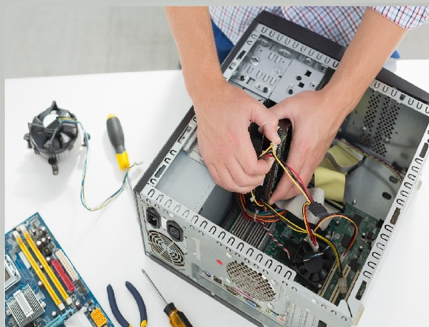

hola como estas
M.A.N Genius
¡Bienvenido a nuestra pagina de reparacion de PC, Mantenimiento de Hardware y Software!
Bienvenidos a M.A.N GENIUS, su aliado confiable en el mundo de la tecnología. En un mundo cada vez más dependiente de la informática, mantener sus equipos en óptimas condiciones se ha convertido en una necesidad importante.En nuestra empresa, entendemos la importancia de contar con computadoras y dispositivos electrónicos que funcionen de manera eficiente, ya sea en su hogar u oficina. Por eso, nos enorgullece ofrecer servicios de reparación y mantenimiento de PC de alta calidad, respaldados por un equipo de expertos apasionados por la tecnología
Explora nuestro sitio web para conocer más sobre nuestros servicios y cómo podemos ayudarte a mantener tu computadora en perfecto estado. En M.A.N GENIUS, estamos listos para ser su socio confiable en la solución de problemas tecnológicos. No deje que las fallas en su PC lo detengan, ¡contáctenos hoy mismo y déjenos hacer que su PC funcione sin problemas!

Te ofrecemos una amplia gama de servicios para satisfacer tus necesidades.
Estos servicios pueden incluir:
-Reparación de Hardware: Diagnóstico y solución de problemas de hardware, como reemplazo de piezas defectuosas, actualización de componentes, reparación de pantallas rotas, problemas de alimentación, etc.
-Mantenimiento Preventivo: Realización de tareas regulares para garantizar el funcionamiento óptimo de la PC, como limpieza interna, reemplazo de pasta térmica, verificación y ajuste de conexiones.
-Actualización de Software: Instalación y actualización de sistemas operativos, programas y controladores para mantener la PC al día y segura.
-Eliminación de Virus y Malware: Escaneo, detección y eliminación de software malicioso que pueda afectar el rendimiento y la seguridad de la PC.
-Recuperación de Datos: Servicios para recuperar datos perdidos o eliminados accidentalmente debido a fallas del sistema, eliminaciones involuntarias o problemas de disco duro.
-Instalación y Configuración de Redes: Configuración de redes inalámbricas o cableadas, resolución de problemas de conectividad y optimización de la velocidad de Internet.
-Servicios de Copia de Seguridad: Establecimiento de soluciones de copia de seguridad automatizadas para proteger los datos importantes del cliente.
-Optimización del Rendimiento: Aceleración de la velocidad de la PC, eliminación de programas innecesarios y ajuste de configuraciones para un rendimiento óptimo.
-Asistencia Remota: Ayuda en línea o por teléfono para resolver problemas menores de software y configuración sin necesidad de una visita física.
-Asesoramiento y Consultoría: Proporcionar recomendaciones sobre la actualización de hardware, la compra de nuevos dispositivos y la seguridad cibernética.
-Venta de Componentes y Equipos: Ofrecer productos y piezas de hardware, como tarjetas gráficas, discos duros, memorias RAM, etc.
-Formación y Capacitación: Ofrecer cursos y tutoriales para ayudar a los clientes a comprender mejor el funcionamiento de sus sistemas y software.
-Servicios de Garantía: Proporcionar garantías para el trabajo realizado y los componentes instalados.